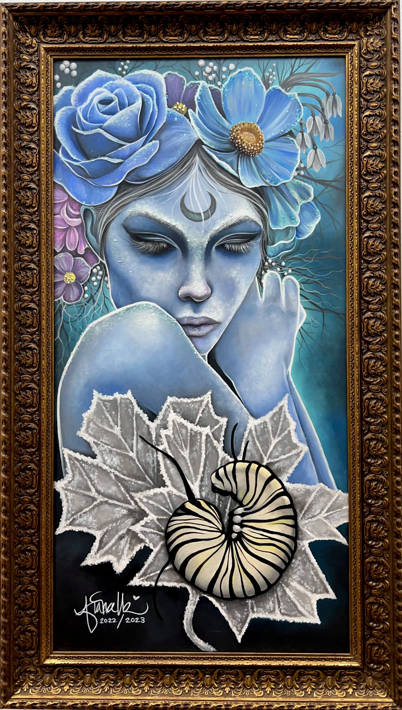

Room 01 · The Gallery
The work.
Light the art like art. Give each piece space, provenance and a story before asking anyone to buy it.
Gallery continues
A painting is not a SKU.
It is a conversation.Story first · commerce second
Selected conversations.
The production site can pull from Shopify product data, but the presentation feels like an exhibition wall: title, medium, year, story, availability—then acquisition.
From original
to collected object.
One artwork can become a coherent collection—print, journal, wearable piece, home object—without making the artist feel like a print-on-demand catalog.

01 · OriginalThe source and story
02 · EditionCanvas · print · tapestry

03 · ObjectCarry the story

04 · In the worldShop · exhibit · gift